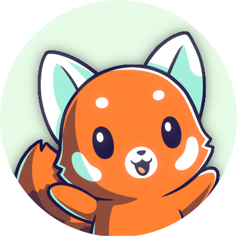

Je suis un peu touche-à-tout. D'un côté, passioné d'informatique depuis mon plus jeune âge, intéressé par
la musique. J'aime aussi monter, faire du graphisme et de la 3D.
Depuis deux ans, je développe et publie de petits jeux en 2D, que vous pouvez retrouver
sur itch.io. Je publie également des projets sur GitHub, destinés d'avantage aux intéressés
de la tech comme moi.
La musique que je crée peut également être retrouvée sur ma chaine YouTube.
Je possède un compte Twitter (@khyrthy3) et un compte Instagram
(@khyrthy_) auxquels vous pouvez vous abonner.
Vous pouvez également rejoindre mon serveur Discord pour discuter avec les autres membres.
TOUS les projets disponnibles sur mon GitHub sont sous license M.I.T. OpenSource. Les textes de license sont disponnibles dans chacun des projets concernés.
La musique que je publie sur YouTube est soumise à la license classique YouTube. Vous pouvez la réutiliser, sans problème, et si vous le souhaitez, me créditer (notez que ce n'est pas obligatoire mais que c'est toujours mieux !).
Mes jeux sur itch.io ne sont soumis à aucune license. Le code source n'est pas non plus disponnible, faute de moyens d'accès.